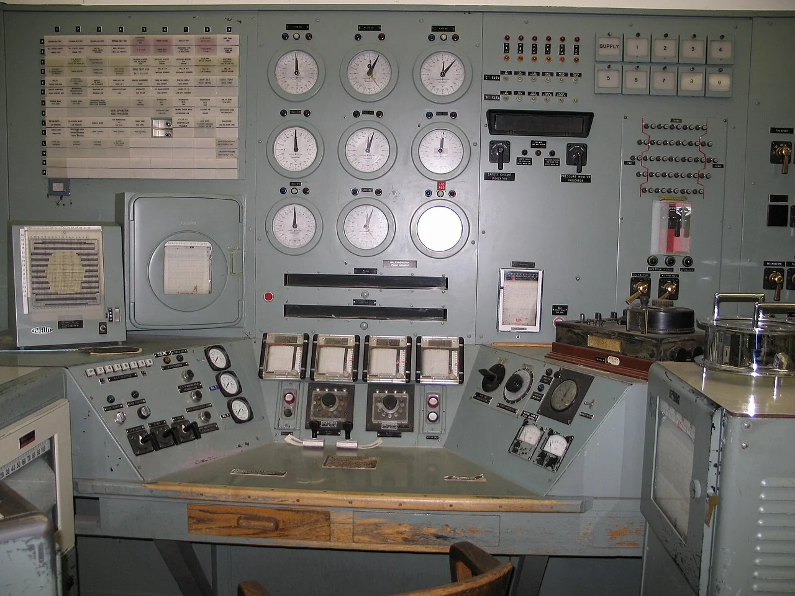
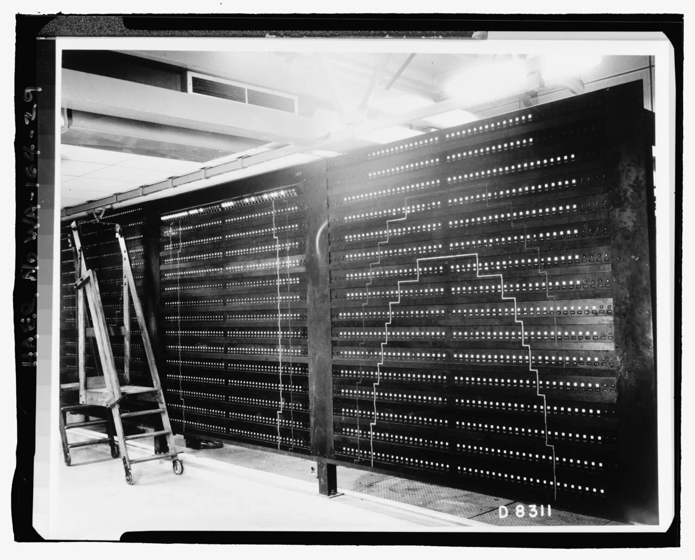
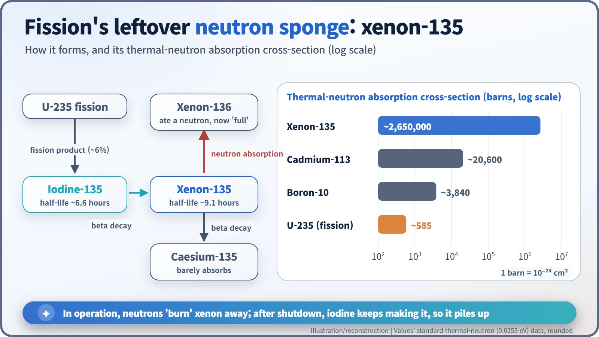
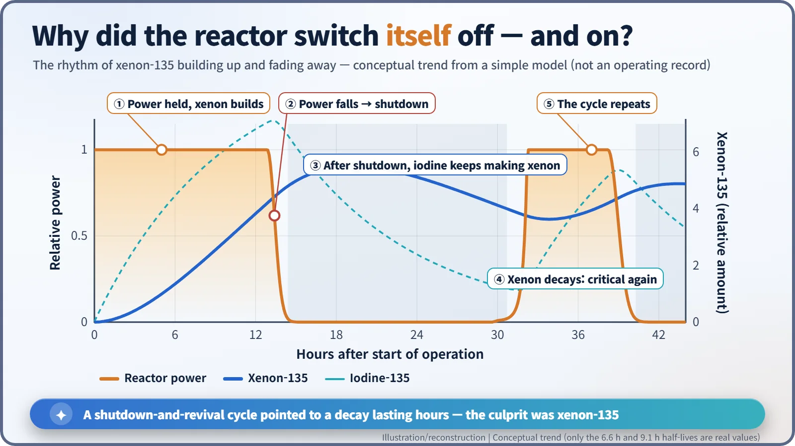

Nuclear History · 106
The Reactor That Switched Itself Off — Hanford's B Reactor and the Discovery of Xenon Poisoning (1944)
The world's first production reactor faded out and came back on its own, until physicists found a fission product with an enormous appetite for neutrons.
In late September 1944, Hanford's B Reactor, the world's first full-scale plutonium production reactor, kept fading out and then reviving on its own. The culprit turned out to be xenon-135, a fission product that swallows neutrons with enormous appetite. Spare fuel channels that DuPont had built in as a margin let the plant overpower it.
Five hundred "unnecessary" holes
What if the engineers building a reactor in the Washington desert in 1944 had simply followed the physicists' numbers? On paper, 1,500 fuel channels were enough. Yet DuPont, the chemical company that built the plant, is said to have bored roughly 500 more. Within weeks, those "unnecessary" holes would rescue the Manhattan Project's plutonium production. [2]
The night a factory took its first breath
The setting is the B Reactor at Hanford, beside the Columbia River. A huge stack of graphite blocks was pierced horizontally by 2,004 aluminium tubes, and river water carried the heat away. Design output: 250 megawatts of heat. This was not a laboratory experiment; it was a factory for turning uranium into plutonium by soaking it in neutrons.
On 13 September 1944 Enrico Fermi (1901–1954) pushed in the first fuel slug. Loading and measurements took about two weeks, and late on the evening of 26 September the reactor went critical, meaning the chain reaction could sustain itself. [1] [4]

3 a.m.: the needle starts to sink
Just after midnight on 27 September, the reactor ran smoothly at a power level higher than any chain reaction before it. According to the historian Richard Rhodes, that was about 9 MW, less than 4% of design power; it was still a test run. Then, from around 3 a.m., the power began to drift down. It kept falling until the reactor shut down altogether. [1] [4]
The truly strange part came next. A few hours later, the reactor came back to life on its own. DuPont's technical lead, Crawford Greenewalt (1902–1993), wrote that it "had mysteriously come to life starting at about 1 a.m. today." When the power was raised again, it sagged again. Accounts differ on the exact hours, but all agree on the pattern: off, then on, then off again.

The first suspect was a cooling-water leak; water soaks up neutrons too. But a leak does not fix itself. Greenewalt plotted the power readings and concluded that it had to be a radioactive decay. His estimate of the half-life came out at about 11.7 hours, yet he "couldn't think of any reasonable radioactive process which would produce the results." [2] [3] [4]
A relay race between two half-lives
On Friday 29 September, the Princeton physicist John Archibald Wheeler (1911–2008) named the culprit: xenon-135, a leftover of fission. [4]

Think of it as a relay. About 6% of uranium-235 fissions lead to iodine-135. Iodine-135 decays with a half-life of about 6.6 hours into xenon-135, which in turn decays with a half-life of about 9.1 hours. The trouble is that xenon-135 is a ferocious neutron sponge. Its absorption cross-section, a measure of how readily a nucleus grabs a neutron, is about 2.6 million barns, roughly 4,500 times the fission cross-section of uranium-235 (about 585 barns). The xenon was stealing the neutrons the chain reaction needed. [7]

Why did the reactor restart by itself? While it runs, neutrons "burn" xenon away. Once it stops, that removal ends, but the leftover iodine keeps making fresh xenon. So xenon actually rises for a while after shutdown, then falls as the iodine runs out. When the sponge dries out, the reactor can go critical again.
The credit is shared. Wheeler is said to have suspected this kind of poisoning from small irregularities in the pilot reactor at Oak Ridge, and the physicist Leona Woods Marshall later said, "Wheeler saw it, without any doubt." Fermi confirmed by calculation that xenon was the cause. And at Berkeley in 1940, Chien-Shiung Wu (1912–1997) had already identified the 9.4-hour radioactive xenon as xenon-135. According to a story often told, Fermi drew on her xenon data. [2] [5] [6]
Five hundred holes of insurance
Wheeler calculated that raising the reactor's reactivity, its margin for sustaining the chain reaction, by about 1.3% would overpower the xenon. The fix was simply more fuel, and this is where DuPont's spare tubes paid off. Once the extra channels were loaded, the reactor could carry its xenon and still make power. Greenewalt later recalled: "That extra reactivity was just exactly what we needed to overcome the xenon effect." [2] [4]
A caveat: the "1,500 plus 500" figure comes from recollections and secondary histories, not from the official record, and sources differ on why the margin was added. DuPont did not foresee xenon. What is certain is that an engineer's habit, building in a margin, carried the plant through physics nobody had yet measured. The U.S. Department of Energy's history dates the first discharge of irradiated fuel to Christmas Day 1944. [1]
Every reactor still does the xenon sums
The discovery became basic reactor know-how. A reactor that has just shut down may be hard to restart for a while because xenon builds up. When power changes, xenon follows with a lag. In large cores, the xenon distribution can even slosh back and forth. Operators today account for all of this when they manoeuvre a plant. Decades later, a xenon-laden, low-power state was also among the background conditions of the 1986 Chernobyl accident, a story for another time. [7]
The small reactors in Chicago ran at too low a power for the problem to show. Some physics only appears at full industrial scale, and at Hanford it was answered by a physicist's calculation and an engineer's margin working together.